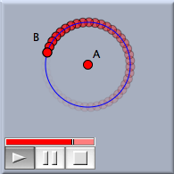
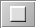
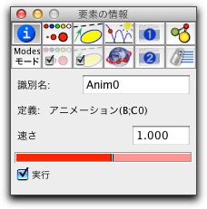
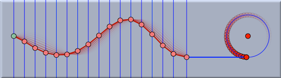

アニメーション
アニメーションモードでは点を動かす作業を
シンデレラが自動的に行ってくれます。 アニメーションモードで動かすためには、軌跡のときと同様、「動かすもの」と「動かす道」 を指定する必要があります。
- 動かすもの はアニメーションで動かす自由要素です。
- 動かす道 は、動かすものが乗っている要素です。アニメーションの間、動くものは動かす道に沿って動きます。
動かすものと動かす道をこの順に選ぶか、軌跡をクリックします。動かすものが「直線上の点」か「円周上の点」か、「点を通る直線」の場合、 シンデレラは、自動的に動かす道を判断します。現在、動かすものと道について、次の組合せがサポートされています。
- 「動かすもの」= 点，「動かす道」= 直線: 点が直線に沿って動きます。
- 「動かすもの」= 点，「動かす道」= 円: 点が円に沿って動きます。
- 「動かすもの」= 直線，「動かす道」= 点: 直線が点の周りに回転します。
アニメーションを定義すると、コントローラが画面に表示されます。次の図は、点が円周上を動くアニメーションが始まったところを示します。
 |
| 点の周りを回る点のアニメーション |
アニメーションの全般的な制御
アニメーションのコントローラは、３つのボタンと速さスライダーからなり、画面の左下に表示されます。これで、アニメーションののすべての制御を行います。ボタンの正確な意味は、以下の通りです。
| |
アニメーションの開始 |
|
アニメーションの一時停止 |
 |
アニメーションの停止 |
動いているアニメーションを停止すると、図はアニメーションを始める前の状態に戻ります。一時停止したアニメーションを停止すると、一時停止の状態から再開できます。スライダーは、アニメーションの速さを調節します。
シンデレラ1.4のアニメーションと異なるところが少しあります。
- アニメーションを定義したら、開始ボタンを押して始める必要があります。
- アニメーションの途中でも要素を動かすことができます。
- 複数の要素をアニメーションとして動かすことができます。それぞれのアニメーションは画面右上のポートボタンで個々に開始や停止ができます。
個々のアニメーションの制御
ポートボタンは、アニメーションを選ぶためのものでもあります。アニメーションを選ぶには、シフトキーを押しながらポートボタンをクリックします。選択されたアニメーションはポートボタンの境界線がハイライトしています。
選ばれているアニメーションの属性は
インスペクタで変更できます。特に、インスペクタの「情報」パネルには、アニメーションの速さを調節するスロットがあります。それにより、アニメーション間の相対的な速さを調節できます。アニメーションの速さは負の値にもできて、その場合はアニメーションの方向が変わります。
 |
| アニメーションのインスペクタ |
インスペクタの「実行」ボックスをチェックすることにより個々のアニメーションを開始したり停止したりすることもできます。
要素のトレース
アニメーションが動いている間、要素の動いている跡を強調したいことがよくあります。その素晴らしい視覚的効果を得るために
足跡 eの節を参照してください。「足跡」は、
軌跡をはっきり示してしまうより面白い効果が得られます。
アニメーションと CindyScript
CindyScript でアニメーションの速さを変えることもできます。初期状態では、アニメーションの名前は "Anim0," "Anim1," ・・となっています。あるアニメーションが、
Anim0という名前であれば、
Anim0.speed と
Anim0.runで速度と実行フラグにアクセスできます。
CindyScript のコードが
であれば、Aのx座標が正である間だけ"Anim0"を実行します。同様に、
は、 "Anim0" の速さをBの
x 座標により制御します。
アニメーションと CindyLab
アニメーションのメインコントロールパネルは
CindyLab のシミュレーションのコントロールパネルと同じです。したがって、すべての物理シミュレーションはアニメーションの要素とリンクし、同期します。この特徴を使えば、モーターのような装置を物理シミュレーションで簡単に使うことができます。 たとえば、次の図は、上下に動く点によって周期的に動かされるゴムバンドをシミュレートしています。上下の点の動きは円周上を動く点によって作られます。
 |
| 振動する波のアニメーション |
HTMLへの書き出し
シンデレラの旧バージョンと違い、HTMLに書き出されたアニメーションはコントロールパネルでフルアクセスできます。つまり、HTMLページ上でアニメーションの開始、一時停止、停止が自由にできます。アニメーションが動いている間、自由要素を動かすこともできます。 これについては、
HTMLへの書き出しの節でも解説します。
要約
動くものと動く道を選んでアニメーションを実行する。
注意
シンデレラ1.4からかなりの変更があります。
See also